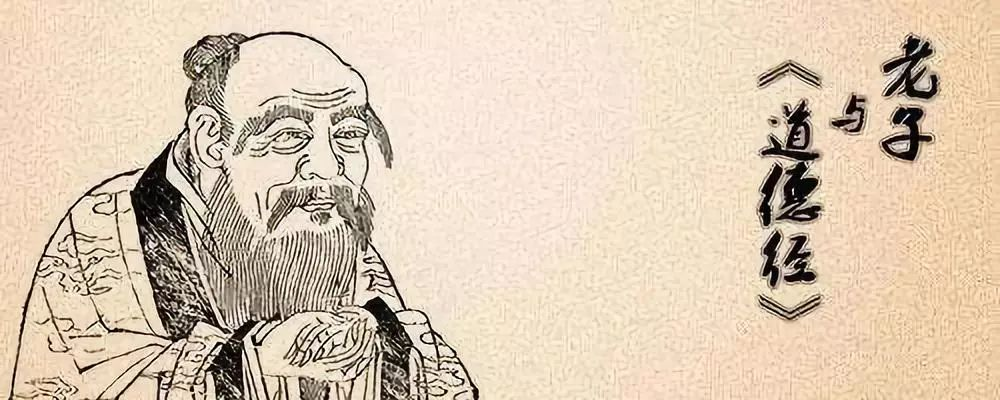

收录于合集


内容提要
老子《道德经》所阐发的国际关系思想为弘扬和平与和谐的国际关系伦理思想提供了深刻的启示，为当今世界大道之国提供了道德准则。其蕴涵的和谐思想对于人类社会跳出冲突与战争的窠臼，走向和平发展的光明大道具有极为重要的现实意义和深远的历史意义。
【关键词】 老子 《道德经》 大道之国 【中图分类号】G02 【文献标识码】A
** 【作者】** 张利华：清华大学国际关系研究院教授，中欧关系研究中心主任。
【来源】 《人民论坛》，2019年10月21日，http://www.rmlt.com.cn/2019/1021/559623.shtml
文章导读
老子（即李耳）是两千多年前中国古代先秦春秋时期的思想家，他的著作——《道德经》（又称《道德真经》《老子》），作为中国古典哲学中的经典流传至今。《道德经》博大精深，不仅揭示了宇宙的起源，而且阐释了天道、地道和人道。《道德经》阐明的关于国家之间关系的思想可以启发我们建构当今世界大道之国的道德准则。
什么是大道之国？这里所说的大道之国不是指国土面积大、人口众多、综合实力强大的国家，而是指掌握了大道的国家，即掌握了人类社会发展规律且具有较高道德水准的国家。事实上，世界上无论是大国还是小国，都可以努力争取成为大道之国。那么，大道之国的道德准则是什么？笔者从《道德经》中得到了启示。比如，《道德经》所阐释的“上善若水”“道法自然”“不以兵强天下”等，这些都可以成为大道之国的道德准则。
一、“道法自然”：和谐共存
《道德经》倡导人们遵守“道”。老子所说的“道”，就是我们今天所说的客观规律。“天道”即宇宙之规律，“地道”即地球自然之规律，“人道”即人类社会之规律。老子强调“天”“地”“人”三者和谐统一，就是倡导人们按照宇宙规律、自然规律和社会规律做事，实现人与自然和谐、人与社会和谐、人与人和谐。正所谓“人法地，地法天，天法道，道法自然”。
老子说：“复命曰常，知常曰明。不知常，妄作凶。知常容，容乃公，公乃全，全乃天，天乃道，道乃久。”意思是说，复归于生命就叫自然，认识了规律就叫聪明。如果做了不认识规律的轻妄举止，就会有“凶”的结果。认识规律才能包容一切，包容一切才能坦然公正，坦然公正才能周全，周全才能符合自然之道，符合自然之道才能长久。这启示我们，作为大道之国，要按照客观规律做事，顺应世界潮流。比如，和平与发展是当今世界的潮流，大道之国应该捍卫世界和平，促进各国发展，不应损人利己，滋事生非，为了一己私利挑起冲突或战争。再比如，保护地球、爱护环境已经成为当今世界之大事。大道之国应该倡导环境保护，号召世界各国就气候和环境问题开展合作。由此可知，掌握大道的国家，应该是国际社会的楷模，将得到世界各国的赞赏和认可。
二、“上善若水”：厚德载物
《道德经》曰：“上善若水。水善利万物而不争，处众人之所恶，故几于道。居善地，心善渊，与善仁，言善信，正善治，事善能，动善时。”意思是说，最善的人像水一样。水善于滋润万物而不与万物相争，停留在众人都不喜欢的低洼地方，最接近于“道”。最善的人，善于选择恰当的地方，心存沉静而深不可测，与人真诚友爱，说话真诚守信，为政能把国家治理好，处事善于发挥所长，行动能够把握时机。
老子用“水”比喻善人的道德准则，而我们可以将其延伸为大道之国的道德准则。即一个掌握了大道的国家应该友善地对待其他国家，善于与其他国家进行合作，绝不会为了一己私利而伤害他国利益。“天地所以能长且久者，以其不自生，故能长生。”大道之国在考虑利益时，应把本国利益与他国利益相结合。由此，大道之国必然能够吸引世界各国与之交往，成为彼此的朋友和伙伴。
三、“大邦不过欲兼蓄人，小邦不过欲入事人”：大小国家互相谦让
《道德经》曰：“故大邦以下小邦，则取小邦；小邦以下大邦，则取大邦。故或下以取，或下而取。大邦不过欲兼畜人，小邦不过欲入事人。夫两者各得所欲，大者宜为下。”意思是说，大国对小国谦下忍让，就可以取得小国的信任和依赖；小国对大国谦下忍让，就可以见容于大国。所以，或者大国以谦下取得小国的依赖，或者小国以谦下见容于大国。大国不要过分统治小国，小国不要过分奉承大国。要想大国和小国都达到各自的愿望，大国尤其应该谦下忍让。这段话阐明了国家的相处之道，即国家不论大小都应该互相尊重、平等相待。实力强大的国家尤其要尊重小国，以消除小国的恐惧感和不安全感。
《道德经》所蕴含的思想与西方进攻性现实主义强调的“屁股决定脑袋”，有多大实力就追求多大的利益之观点完全不同，老子倡导的是一种国家之间相互平等和尊重的思想。老子对自高自大、自以为是、称王称霸的行为进行了批判，并用形象的比喻说明其危害。《道德经》曰，“企者不立，跨者不行。自见者不明，自是者不彰，自伐者无功，自矜者不长”。由此可知，作为一个执大道的国家，不管其多么强大，都应当谦虚谨慎、戒骄戒躁，与其他国家和平共处。
四、“以道佐人主者，不以兵强天下，”：不靠兵力逞强天下
《道德经》曰：“以道佐人主者，不以兵强天下，其事好还。师之所处，荆棘生焉。大军之后，必有凶年。善有果而已，不敢以取强。”意思是说，依照“道”管理国家的人，不靠兵力逞强天下。穷兵黩武这种事必然会得到报应。军队打过仗的地方，必然荆棘满地、满目疮痍。大战之后，必然会出现荒年。善于用兵的人，只要达到了目的即可，并不以兵力强大而逞强好斗。由此可知，穷兵黩武不合于“道”，不合于“道”就会灭亡。
“将欲取天下而为之，吾见其不得已。天下神器，不可为也，不可执也。为者败之，执者失之。是以圣人无为，故无败，故无失。夫物或行或随；或觑或吹；或强或羸；或载或隳。是以圣人去甚、去奢、去泰。”意思是说，用强制的办法治理天下是不能够达到目的的。天下的人民是神圣的，不能够违背他们的意愿和本性而加以强力统治，否则一定会失败。若强力把持天下，就一定会失去天下。圣人不妄为，所以不会失败；不把持，所以不会被抛弃。因此，圣人要除去那种极端的、奢侈的、过度的措施以及法度。
在老子眼里，掌握大道的国家应该是“圣人”领导的国家，“圣人”就是具有先人后己、全心全意为人民服务的高尚品德之人。“圣人”领导的国家应当是和平的、祥和的、永远不称霸的。老子反对侵略战争，反对用武力征服天下。他告诫我们，国家强兵只是为了自卫，而不是通过炫耀武力来获取利益，更不能通过战争来掠夺他国财富。
综观历史，可以看到，那些靠战争起家妄图称霸世界的国家都只能得逞一时，昙花一现。无论是近代历史时期的拿破仑帝国，还是二战期间的希特勒帝国、日本法西斯军国主义，无一例外。
当今世界，资本主义世界体系依然存在，弱肉强食、丛林法则、冷战思维、斗争哲学在一些政治领导人和精英脑中犹存。老子《道德经》所阐发的国际关系思想为弘扬和平与和谐的国际关系伦理，为当今世界大道之国道德准则的建构提供了深刻的启示。老子的和谐思想对于人类社会跳出冲突与战争的窠臼，走向和平发展的光明大道指明了方向，具有极为重要的现实意义和深远的历史意义，值得我们不断学习与借鉴。
【参考文献】
①[魏]王弼注、楼宇烈校释：《老子道德经注校释》，北京：中华书局，2008年。
责编/孙渴 美编/杨玲玲
_ ** _ ** _ ** _ 本文来源于**__ _ ** _ ** _ ** _ 《人民论坛》，2019年10月21日**__
点“在看”给我一朵小黄花